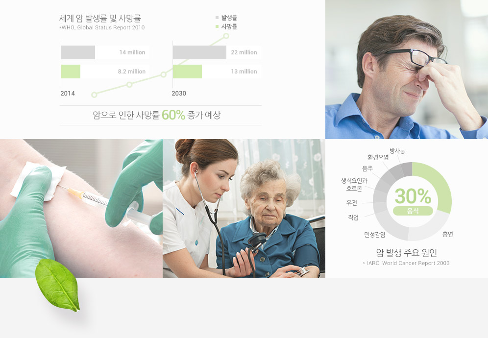
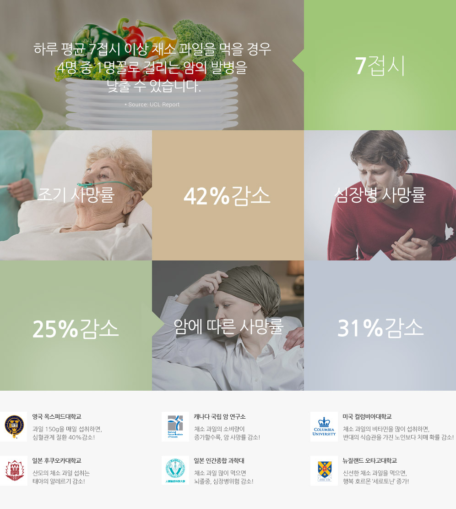
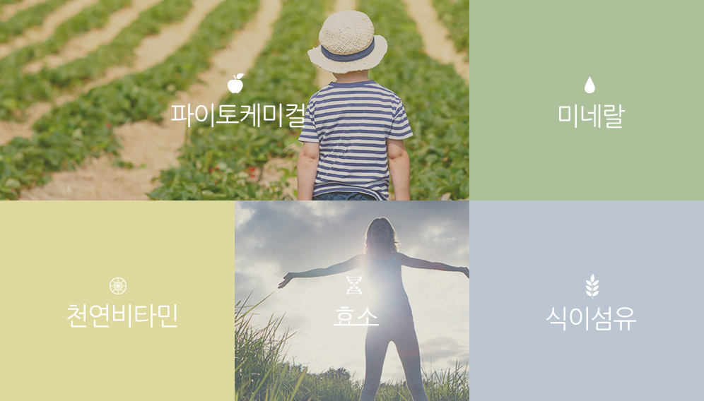
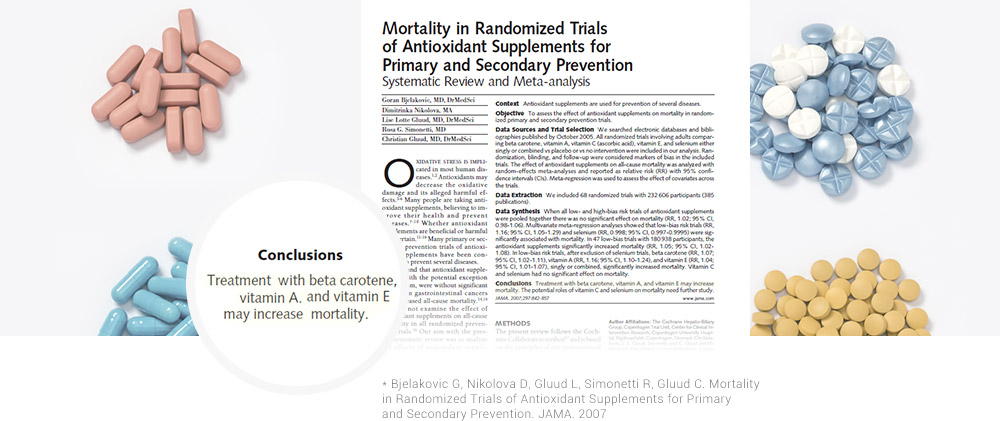
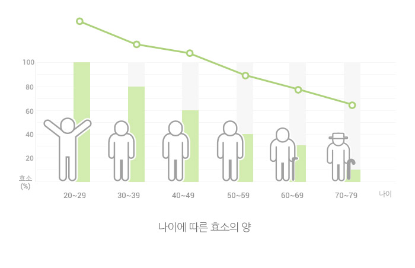
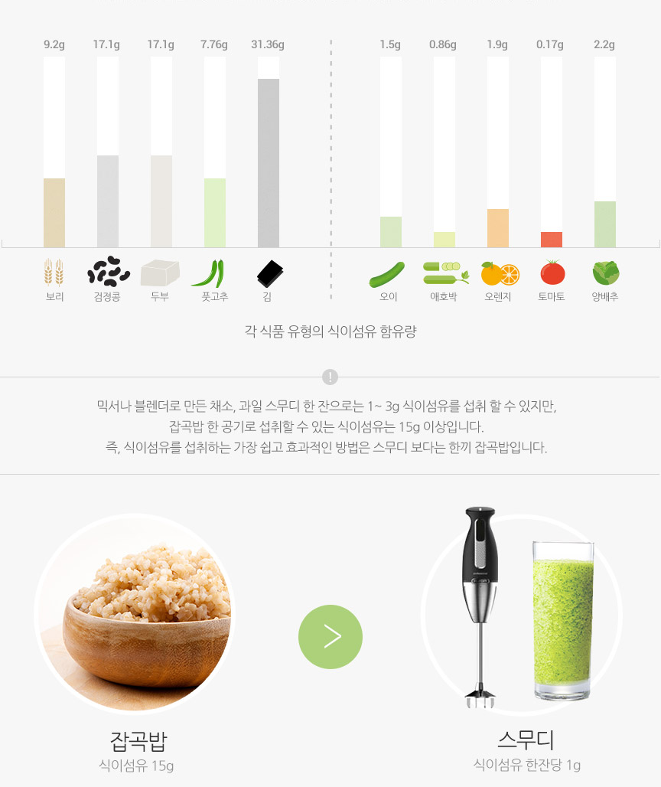
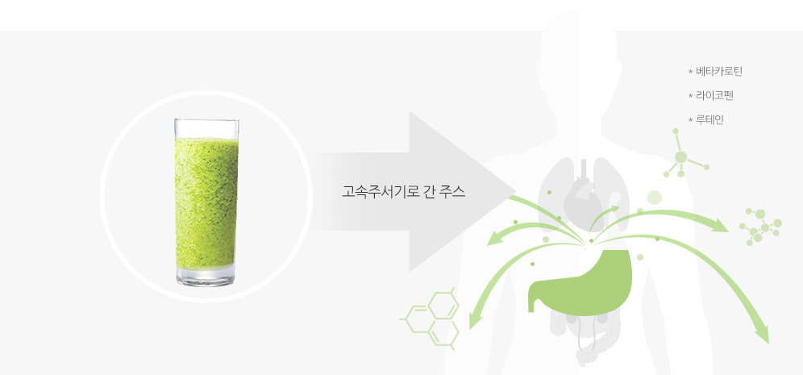

01
자연을 거스르는 식습관으로
현대인은 아직도 고통받고 있습니다

과도한 스트레스, 운동 부족, 잘못된 식습관 등은
비만의 원인이 되고, 이는 각종 성인병을 유발합니다.
성인병의 가장 큰 원인은 잘못된 식습관으로,
자연의 먹거리에 현대인을 위한 진정한 해결 방법이 있습니다.
02
세계 유수의 기관들에서
채소, 과일의 우수성에 대한 연구결과가
발표되었습니다
'채소 과일을 많이 먹을수록 사망률이 감소한다'
건강해지려면 채소, 과일을 많이 먹어야 합니다.
채소 과일에는 비타민, 미네랄, 식이섬유 뿐만 아니라 파이토케미컬, 효소가 풍부합니다.
런던대 연구 결과, 하루 평균 7접시 이상 채소 과일을 먹을 경우 4명 중 1명 꼴로 걸리는 암의 발병을 확! 낮출 수 있습니다.
하지만 충분한 양의 채소 과일을 섭취하는 것은 쉽지 않습니다.

- 영국 옥스퍼드대학교
- 과일 150g을 매일 섭취하면, 심혈관계 질환 40% 감소!
- 캐나다 국립 암 연구소
- 채소 과일의 소비량이 증가할수록, 암 사망률 감소!
- 미국 컬럼비아대학교
- 채소 과일의 비타민을 많이 섭취하면, 반대의 식습관을 가진 노인보다 치매 확률 감소!
- 일본 후쿠오카대학교
- 산모의 채소 과일 섭취는 태아의 알레르기 감소!
- 일본 인간종합 과학대
- 채소 과일 많이 먹으면 뇌졸중, 심장병위험 감소!
- 뉴질랜드 오타고대학교
- 신선한 채소 과일을 먹으면. 행복 호르몬'세로토닌' 증가!
03
전세계적으로 채소 과일 많이 먹기
캠페인이 진행되고 있습니다
이미 채소 과일 섭취의 중요성을 인식한 선진국에서는
국가적인 차원의 채소 과일 많이 먹기 대국민 캠페인을 진행하고 있습니다.
전 세계가 영양의 균형을 생각한 올바른 식습관을 통해서
건강하게 살기 위해 지속적으로 노력하고 있습니다.
올바른 식습관을 위한 세계 각국의 캠페인
- Republic of Korea 가족건강 365 하루에 3번, 6가지 이상 채소 과일을 5색으로 맞춰 먹자
- USA Strive for 5 cups 5가지 색깔의 채소 과일을 매일 5접시 이상 먹자
- UK Eat in Colour 매일 5분의 시간을 내어 다양한 컬러의 신선한 채소 과일을 먹자
-
Canada
Fruits and Vegitables
- Mix it up! 언제, 어디서든 매 끼니와 간식을 채소 과일과 함께 -
Japan
5 servings of fruits
and vegetables a day 하루 총 5회에 걸쳐 350g의 채소와 200g의 과일 섭취 권장 - New Zealand 5 + a day 매일 5개 이상의 채소 과일을 섭취
-
Australia
2 - 5 servings of fruits
and vegetables a day 300g의 과일과 375g의 채소 매일 섭취 권장 -
Hungary
3 servings of fruits
and vegetables a day 각각 세 종류의 채소 과일을 섭취 -
Poland
Fruits and vegetables
5 times a day 매일 400g의 채소 과일을 5회에 걸쳐 섭취 -
Denmark
6 servings of fruits
and vegetables a day 하루 6회분, 600g의 채소 과일을 섭취하자 - Brazil 5 a day 하루 다섯번의 채소 과일 섭취 권장 및 체계적인 식단 제공
- Netherlands 2X2 하루 6회분, 600g의 채소 과일을 섭취하자
04
채소 · 과일은 왜 우리를 건강하게 할까요?
채소 과일에는 건강에 도움이 되는 천연 비타민, 미네랄, 식이섬유, 파이토케미컬, 효소가 풍부합니다.

05
채소 · 과일에 풍부한 영양소, 파이토케미컬
파이토케미컬은 오직 채소 과일에만 있는 식물 영양소 입니다.
몸 속의 백혈구처럼, 식물이 해충, 미생물 등 외부의 공격으로 부터 스스로를 보호하기 위한 방어 물질입니다.
파이토케미컬은 강력한 항산화 효과로 면역력 증진, 노화방지, 피부 미용 등 다양한 효능이 있는 영양소입니다.
파이토케미컬은 컬러별 채소 과일에 따라 각기 다른 영양소와 그 효능을 가지고 있습니다.
따라서 균형있는 영양소 섭취를 위해 컬러별 채소 과일을 가열 조리하지 않고 골고루 섭취해야 건강에 도움이 됩니다.
- YELLOW 베타카로틴(오렌지), 피부건강, 면역 증진
- PURPLE 안토시아닌(포도), 심혈관계질환 개선, 기억력 증진
- WHITE 쿼세틴(양배추), 혈압저하, 간보호 효과
- RED 라이코펜(토마토), 항암효과, 혈관기능강화
- GREEN 루테인(케일), 눈 건강, 항염증 효과
잠깐! 혹시 비타민을 먹고 계시나요?
바쁜 일상 속에서 사람들은 채소 과일 대신 쉽고 빠른 효과를 기대하며
비타민 보충제 등 인공적인 영양제를 섭취합니다.
하지만, “세계적인 비타민 열풍 속에서 비타민 보충제가 오히려 사망률을 높일 수 있다”라는 논문이 발표되는 등
지금 여러분이 먹고 있는 비타민에 대한 논란은 끊이지 않고 있습니다.

06
우리가 몰랐던 효소의 특징
효소는 우리 몸에서 일어나는 거의 모든 반응을 도와주는 우리 생명에 꼭 필요한 영양소입니다.
효소는 우리가 먹은 음식을 소화시켜 이로운 에너지로 바꿔주고, 불필요한 노폐물을 배출시키며,
면역력을 높여줍니다. 심지어 말을 하고, 생각하고, 숨을 쉬는 데에도 효소의 도움이 필요합니다.
1. 효소는 생명유지에 꼭 필요한 필수에너지 입니다.
효소는 몸에 꼭 필요한 에너지로,
체내 효소가 부족한 사람은 몸 안의 불필요한 것들이 분해되지 않고 에너지가 생성되지 않기 때문에 쉽게 지치게 됩니다.
이와 반대로 효소가 충분한 사람은 섭취한 음식을 원활하게 에너지로 만들어 항상 활기찬 생활을 할 수 있습니다.
2. 나이가 들면서 줄어드는 효소, 음식을 통해 보충해야 합니다.
몸 속의 효소의 양은 나이가 들수록 점점 감소하고 스스로 생성되지 않습니다. 따라서 효소는 음식을 통해 보충해야하고,
효소를 보충할 수 있는 가장 쉬운 방법은 채소, 과일을 먹는 것 입니다.

3. 효소는 가공하지 않은 채소 과일에 가장 많습니다.
효소는 열에 약해 40℃ 이상에서는 효소가 감소합니다.
가열한 콩과 생 콩을 발아시켰을 때, 가열한 콩은 싹이 나지 않지만,
생 콩은 효소가 있어 생명이 유지 되지 때문에 싹이 납니다.
이처럼 열이 가해지면 효소가 감소하기 때문에
조리된 음식이 아닌 가공하지 않은 채소 과일을 통해서만 살아있는 효소를 섭취 할 수 있습니다.
효소가 파괴된
가열한 콩
효소가 파괴 되기 때문에
가열된 콩은 발아하지 않습니다.
VS
효소가 살아있는
생 콩
생 콩은 효소가 살아있기 때문에
발아 하였습니다.
07
식이섬유의 진실과 오해
식이섬유는 우리가 섭취하는 채소, 과일이나 곡류의 세포벽 성분을 지칭하는 용어로
완전히 소화되지 않는 부분을 말합니다.
식이섬유는 에너지나 칼로리는 없지만, 내장기관을 거치면서 대장을 청소하는 기능이 탁월합니다.
1. 주스는 식이섬유를 섭취하기 위해 먹는 것이 아니라,
파이토케미컬, 비타민, 미네랄 등의 영양소를 섭취하기 위해 먹는 것입니다.
식이섬유를 섭취할 수 있는 주요 식품은 채소, 과일, 곡류입니다.
그 중에서 채소, 과일 보다는 식이섬유가 많이 들어 있는 한끼 식사의 곡류를 먹는 것이 효과적입니다.

믹스나 블렌더로 만든 채소, 과일 스무디 한 잔으로는 1~ 3g 식이섬유를 섭취 할 수 있지만,
잡곡밥 한 공기로 섭취할 수 있는 식이섬유는 15g 이상입니다.
잡곡밥 식이섬유 15g VS 스무디 식이섬유 한잔당 1g
2. 갈아 만든 주스의 수용성 식이섬유는 오히려 영양소 흡수에 방해가 됩니다.
믹서 또는 블렌더로 갈아 만든 주스에 들어있는 수용성 식이섬유는
우리 몸에 좋은 식물 영양소인 베타카로틴, 라이이코펜, 루테인, 토코페롤의 흡수를 감소시킵니다.
또한 체내 효소가 부족하면 식이 섬유를 제대로 소화시키지 못해 음식물 찌꺼기로 남게 되는데
이럴 경우 식이섬유가 제대로 된 기능을 할 수 없습니다.

08
건강은 휴롬주스
-
간편한 휴롬주스
하루 권장량인 7접시 이상의
채소와 과일을 휴롬주스
한 잔으로 간편하게 섭취할 수 있습니다. -
높은 흡수율
식이섬유는 영양소 흡수율을 방해하기도 합니다.
식이섬유가 일부 제거된 주스는 채소 과일의
다른 주요 영양소 흡수율을 높여줍니다. -
씨와 껍질 그리고
견과류의 영양 채소, 과일의 씨와 껍질은 물론 견과류까지
주스로 담아내기 때문에
주스의 영양이 한층 풍부합니다.